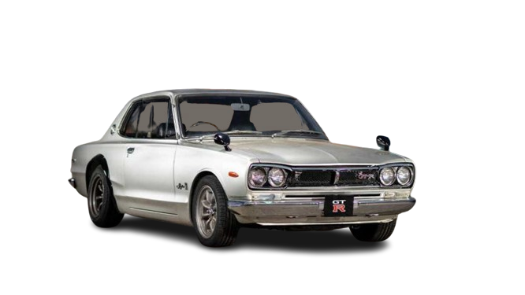
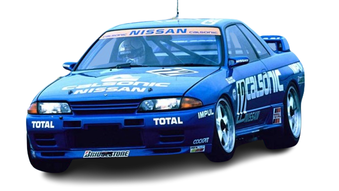
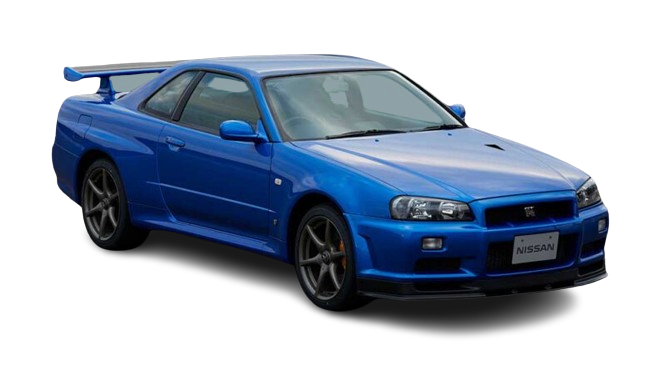

GT-R รุ่นแรกเกิดขึ้นในปี 1969 ภายใต้ชื่อ Nissan Skyline 2000GT-R รหัส C10 เจ้าของฉายา Hakosuka ที่เป็นการรวมคำศัพท์ญี่ปุ่น 2 คำเข้าด้วยกันคือ Hako หมายถึงกล่อง และ Suka หมายถึงเส้นขอบฟ้า มีตัวถัง 2 แบบคือซีดาน 4 ประตูรหัส PGC10 กับคูเป้ 2 ประตู KPGC10 แรกเริ่มมันถูกพัฒนาขึ้นเพื่อเป็นรถแข่งโดยมากับเครื่อง 6 สูบเรียงรหัส S20 ขนาด 2 ลิตร กำลัง 162 PS จับคู่เกียร์ธรรมดา 5 สปีด ขับเคลื่อนล้อหลัง ความยอดเยี่ยมของ C10 การันตีได้จากการคว้าถ้วยรางวัลมาครองได้กว่า 50 รายการในระยะเวลา 2 ปี ต่อมาเริ่มได้รับความนิยมในหมู่วัยรุ่นญี่ปุ่นที่จับมาตกแต่งและแข่งกันบนถนนตอนกลางคืนจนเกิดเป็นวัฒนธรรม Midnight Racing ที่มีมาจนถึงทุกวันนี้ Skyline 2000GT-R C10 ทั้ง 2 ตัวถังผลิตออกมาทั้งหมด 1,945 คันและขายเฉพาะในญี่ปุ่นเท่านั้น ขึ้นแท่นเป็นรถ JDM ระดับตำนานที่หายากสุด ๆ และมีมูลค่าสูงมากในปัจจุบัน
จากการคว้าแชมป์ในประเทศได้เป็นจำนวนมากของ GT-R R32 ทำให้ Nissan เริ่มมองหาความท้าทายใหม่ ๆ ในการแข่งขันระดับสากลด้วยการบุกเข้าสู่ตลาดออสเตรเลียพร้อมกับส่ง R32 ลงแข่งขันรายการ Australian Touring Car Championship แล้วก็คว้าแชมป์ได้ทันทีตั้งแต่สนามแรก ก่อนจะค่อย ๆ สร้างชื่อและเก็บชัยชนะได้อีกหลายครั้ง ทำเอาทั่วทั้งวงการรู้สึกทึ่งกับรถแข่งญี่ปุ่นรุ่นนี้ที่สามารถเบียดเอาชนะรถแข่งจากออสเตรเลียและอเมริกาลงได้ สื่อของออสเตรเลียในขณะนั้นจึงขนานนาม R32 ว่า “The Godzilla” ที่หมายถึงปีศาจจากญี่ปุ่น ชื่อนี้ถูกใช้อย่างแพร่หลายในวงการสื่อยานยนต์จนกลายเป็นชื่อเล่นของ GT-R ไปในที่สุดและถูกเรียกขานตัวแรงสายพันธุ์นี้มาจนถึงปัจจุบัน Skyline GT-R R32 สิ้นสุดสายการผลิตในปี 1994 ด้วยจำนวน 43,937 คัน สถาปนาตัวเองเป็นอีกหนึ่งตำนานที่สาวกทั่วโลกปรารถนาจะได้ครอบครองมากที่สุดรุ่นหนึ่งในปัจจุบัน
GT-R รุ่นที่ 5 ได้ชื่อว่าเป็น GT-R ที่โด่งดังที่สุด นี่คือรถในฝันของผู้ชายทั่วโลก เป็นภาพตราตรึงที่คนรักรถทุกคนต้องรู้จัก เปิดตัวในปี 1999 พร้อมหน้าตาที่หล่ออมตะตลอดกาล ขนาดตัวรถเล็กลงจาก R33 เล็กน้อย มากับเครื่อง RB26DETT เหมือนเดิม จุดเด่นของรุ่นนี้คือจอแสดงผลมัลติฟังก์ชัน LCD ขนาด 5.8 นิ้วในห้องโดยสารสำหรับแสดงข้อมูลการขับขี่ทุกอย่างซึ่งถือเป็นของใหม่สุดล้ำในยุคนั้น R34 เป็นรถที่ทาง Nissan ซุ่มพัฒนากันในสนาม Nürburgring Nordschleife ตั้งแต่แรก มันสามารถทำเวลาอย่างไม่เป็นทางการได้ที่ 7.52 นาที เร็วกว่าที่ R33 รุ่นพี่ทำได้ R34 มีเวอร์ชันพิเศษเป็นที่พูดถึงอยู่หลายตัว ที่หลายคนน่าจะคุ้นเคยกันดีก็คือ V-Spec II ที่มากับการปรับปรุงประสิทธิภาพตัวรถหลายอย่างพร้อมกับหน้าตาที่หล่อเข้มกระชากใจ นอกจากนี้ยังมีเวอร์ชัน M-Spec ที่มากับฝากระโปรงอะลูมิเนียม รวมถึง V-Spec II Nür และ M-Spec Nür สองเวอร์ชันส่งท้ายที่ตั้งชื่อตามสนามแข่ง Nürburgring ผลิตออกมารวมกันราว 1,000 คัน อย่างไรก็ตาม GT-R R34 ยังมีตัวแรงอีกหนึ่งเวอร์ชันที่ไม่พูดถึงไม่ได้คือ Z-Tune รุ่นนี้ออกมาในปี 2003 หลังจากเลิกผลิตไปแล้ว โดยเป็นผลงานของแผนก Nismo ที่จับเอา R34 V-Spec มือสองจำนวน 18 คันมาทำใหม่ทั้งคันตั้งแต่ไล่ขยายความจุเครื่องยนต์เป็น 2.8 ลิตรพร้อมปรับปรุงเทอร์โบใหม่จนได้กำลัง 500 PS ตัวถัง ช่วงล่าง เบรก เกียร์ ระบบขับเคลื่อน และอื่น ๆ ถูกปรับปรุงใหม่ทั้งหมด ทุกขั้นตอนทำด้วยมืออย่างพิถีพิถันจนได้สมรรถนะสุดโหด เร่ง 0 – 100 กม./ชม. ใน 3.8 วินาที อัดได้สูงสุด 327 กม./ชม. กลายเป็นสุดยอดตำนานความแรงที่มีมูลค่ามหาศาลในปัจจุบัน
